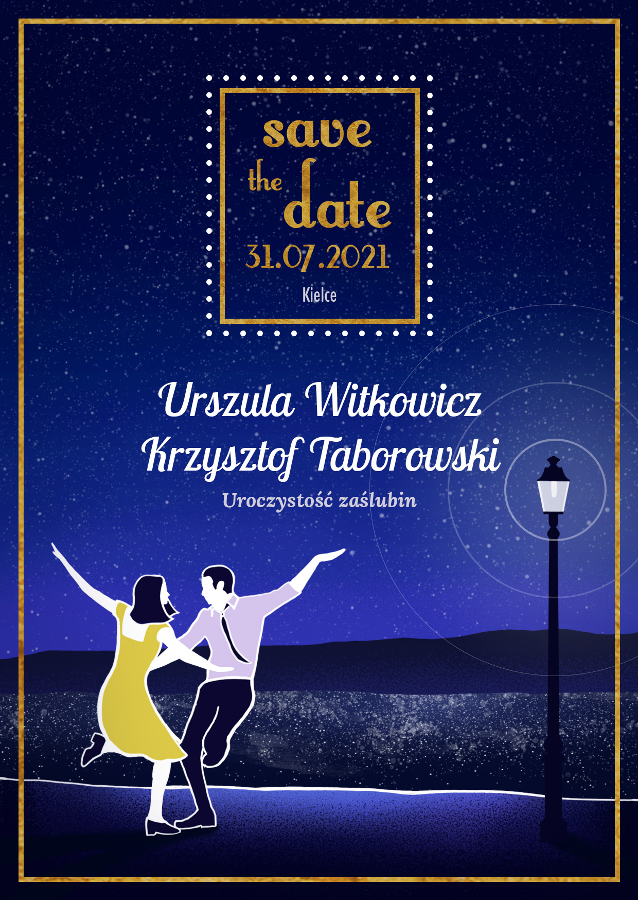

Home
O Nas
Ślub i Wesele
Do pobrania
Kontakt

Uroczystość zaślubin
Parafia św. Józefa Robotnika w Kielcach Turystyczna 3, 25-545 Kielce
Przyjęcie weselne
Dworek Binkowski Wojciecha Szczepaniaka 40, 25-118 Kielce
Noclegi
Binkowski Hotel Wojciecha Szczepaniaka 42, 25-043 Kielce